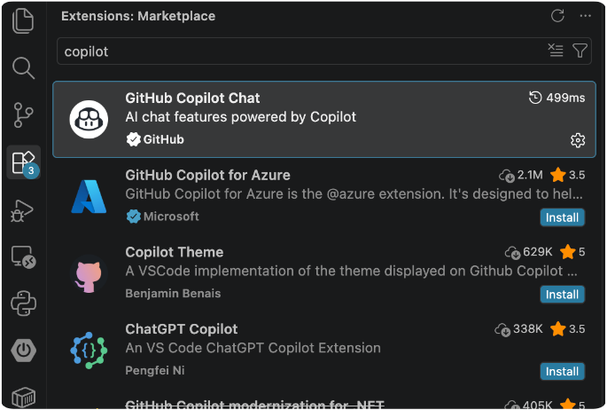
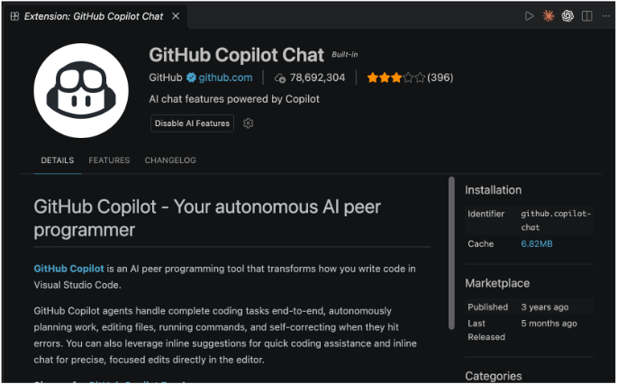
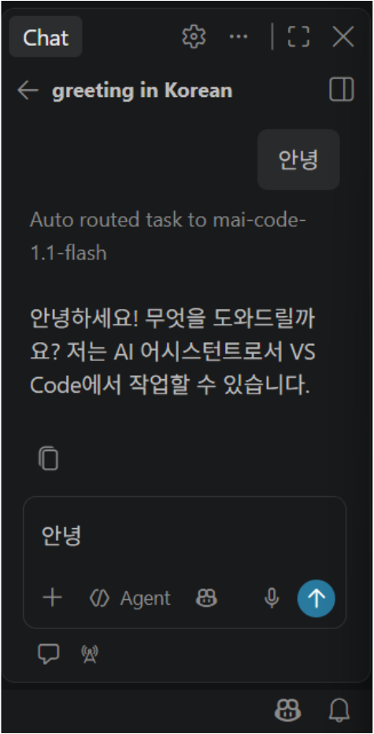
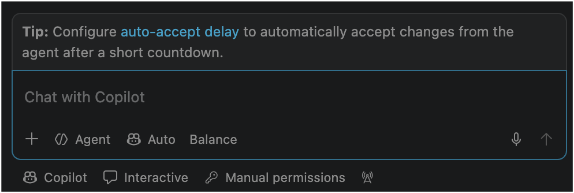
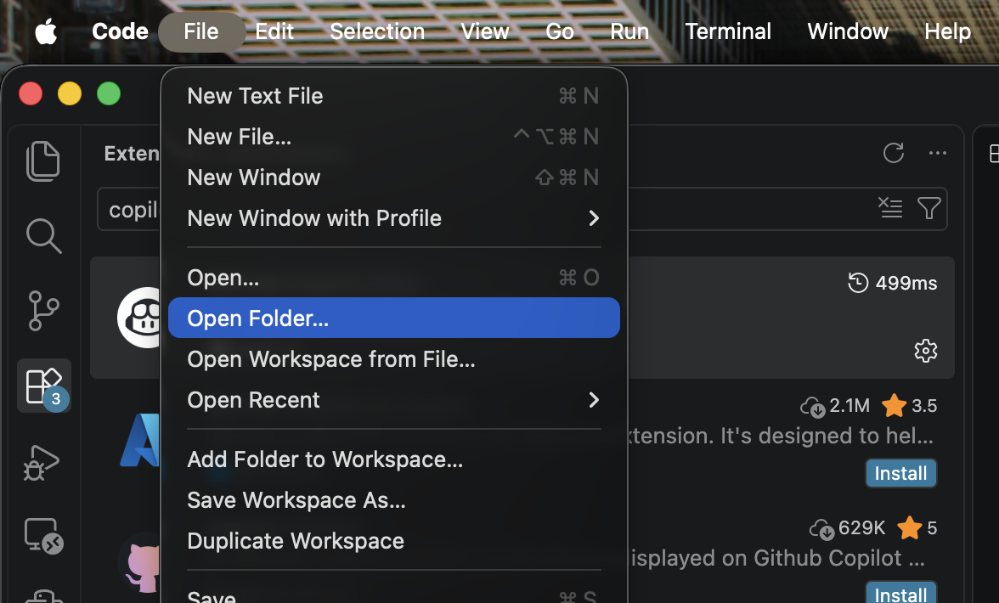

GitHub Copilot + Frontend
AI와 함께 만드는 스마트 일정 관리 대시보드
GitHub Copilot Agent Mode를 활용해 일정 관리 기능과 통계를 갖춘 반응형 웹 대시보드를 단계별로 구현합니다.
GitHub Copilot 소개
정의
GitHub에서 제공하는 AI 기반 코딩 지원 도구로, 개발자가 자연어로 요청하거나 코드를 작성할 때 생성, 수정, 문제 해결을 도와줍니다.
선정 이유
Agent Mode는 실제 프로젝트의 파일을 생성하거나 수정하는 작업에 적합하며, 외부 API 키 없이도 편리하게 사용할 수 있습니다.
주요 기능
- Code Completion
- Copilot Chat
- Agent Mode
- Debugging & Refactoring
실습 환경 구축
필수 준비 요소
- Windows / MacOS
- Visual Studio Code
- GitHub Copilot Free
- Chrome / Edge
기본 설정
- GitHub 계정 생성 또는 로그인
- VS Code 설치
- Copilot Free 활성화
- Extensions에서 Copilot Chat 확인
실습 도구
- HTML
- CSS
- JavaScript
- Local Storage
설정 사이트와 실행 방법
GitHub 계정 준비
github.com에 접속해 계정을 만들거나 로그인합니다.
https://github.comVS Code 설치
code.visualstudio.com에서 설치 파일을 다운로드하고 실행합니다.
https://code.visualstudio.com/Copilot Free 활성화
GitHub Copilot의 요금제 페이지에서 무료 플랜을 선택해 활성화합니다.
https://github.com/features/copilotVS Code에서 연결
Extensions에서 Copilot Chat을 검색해 설치 여부를 확인하고, 설치되어 있지 않다면 설치 후 VS Code를 다시 실행합니다.
View → Chat 또는 Ctrl + Alt + I


활성화 확인
Chat 창에 “안녕”을 입력해 Copilot 응답이 오는지 확인합니다.
프롬프트 입력 → 응답 확인

기본 세팅 점검
모델 선택, 권한 설정, 자동 승인 방식 등을 확인해 작업 환경을 준비합니다.
Ask / Agent / Plan 모드 선택

Copilot 기본 사용법
프롬프트 예시
“hello라는 새로운 파일 생성. 'helloworld를 출력하는 test.c 코드를 작성해줘.'”
AI 모드 선택
- Ask
- Agent
- Plan
실행 환경
- Chat 메뉴 열기
- 현재 파일/프로젝트 컨텍스트 전달
- 권한 승인 후 파일에 코드 삽입
실습 목표 및 구현 기능
실습 목표
GitHub Copilot Agent Mode를 이용하여 HTML, CSS, JavaScript 기반의 스마트 일정 관리 대시보드 웹사이트를 구현합니다.
구현 기능
- 일정 추가, 수정 및 삭제
- 마감일 및 우선순위 설정
- 완료 상태 변경 및 필터링
- 전체 일정, 완료 일정, 완료율 통계
- LocalStorage를 활용한 데이터 저장
- 다크모드 및 반응형 UI
파일 구조
copilot-todo/
├── index.html
├── style.css
└── script.js5-2. 단계별 실습 진행
1
STEP 1. 프로젝트 폴더 생성
바탕화면에 실습 폴더를 만들고 VS Code에서 엽니다.
2
STEP 2. 대시보드 기본 UI 생성
HTML/CSS/JS 파일 및 화면을 구성합니다.
3
STEP 3. 일정 관리 기능 구현
일정 추가, 수정, 삭제, 완료 체크 기능을 구현합니다.
4
STEP 4. 마감일 및 우선순위 기능 구현
날짜 설정, 우선순위, 필터링 기능을 구현합니다.
5
STEP 5. 통계 및 데이터 저장
완료율을 계산하고 LocalStorage에 데이터를 저장합니다.
6
STEP 6. UI 개선 및 다크모드 (선택)
반응형 디자인을 적용하고 테마를 변경합니다.
STEP 1 / PROJECT SETUP
프로젝트 폴더 만들고 열기
- 바탕화면에
copilot-todo폴더를 생성합니다. - VS Code 상단 메뉴에서
File → Open Folder를 선택합니다. - 생성한
copilot-todo폴더를 선택합니다. - 폴더 신뢰 여부를 묻는 창이 나오면 본인이 만든 폴더인지 확인한 후 신뢰를 선택합니다.

Hands-on workspace
프롬프트부터 결과 화면까지
프롬프트와 파일 내용을 확인하고, 이전 코드와 비교한 뒤 실제 UI를 미리봅니다.
01 / PROMPT
실습 프롬프트
STEP 2 프롬프트
02 / FILE CHANGES
파일 변경 내용
파일 번호 0~4를 사용하세요. 예: index0.html, style0.css, script0.js (표시 단계는 2~6)
추가된 코드
제거된 코드
변경 없음
예시 코드 편집하기
선택한 단계 파일을 수정하고 적용할 수 있습니다. 이전 단계 파일이 있으면 변경 내용도 비교합니다.
03 / LIVE PREVIEW
미리보기